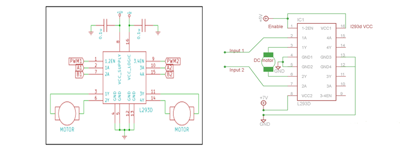

The term motor-controller refers to an amplifier that is designed to control the speed and direction of a motor using a specified set of signal commands.
A motor-controller IC is an integrated circuit chip that is designed to use a low-power input signal to provide a high-power output signal commanding both speed and direction to a DC motor. These usually require a few extra components (a few resistors, a capacitor, and a +5v power supply from Arduino) but take care of the motor-control.
L293D is a quadruple H-bridge, high current motor driver IC. It can be used to drive two motors at a time in both the directions with an output current of 600mA for each motor. L293D IC is designed to drive relays, DC motors, stepper motors and other inductive loads with high current and high voltage requirements.
L293D is a 16-pin IC available in dual in-line package. It is capable of driving two motors. for driving a single motor A
The table shows which direction the motor will turn based on the control/input pins.
const int pwm = 2 ; //initializing pin 2 as pwm
const int in_1 = 8 ;
const int in_2 = 9 ;
void setup() //For providing logic to L298 IC to choose the direction of the DC motor
{
pinMode(pwm,OUTPUT) ; //we have to set PWM pin as output
pinMode(in_1,OUTPUT) ; //Logic pins are also set as output
pinMode(in_2,OUTPUT) ;
}
void loop()
{
digitalWrite(in_1,HIGH) ; //For Clock wise motion , in_1 = High , in_2 = Low
digitalWrite(in_2,LOW) ;
analogWrite(pwm,255) ;
/*setting pwm of the motor to 255 we can change the speed of rotaion by chaning pwm input but we are only
using arduino so we are using higest value to driver the motor */
delay(3000) ; //Clockwise for 3 secs
//For brake
digitalWrite(in_1,HIGH) ;
digitalWrite(in_2,HIGH) ;
delay(1000) ;
//For Anti Clock-wise motion - IN_1 = LOW , IN_2 = HIGH
digitalWrite(in_1,LOW) ;
digitalWrite(in_2,HIGH) ;
delay(3000) ;
//For brake
digitalWrite(in_1,HIGH) ;
digitalWrite(in_2,HIGH) ;
delay(1000) ;
}